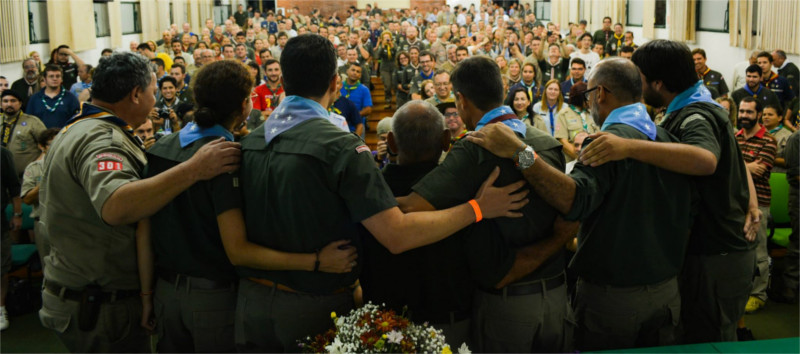
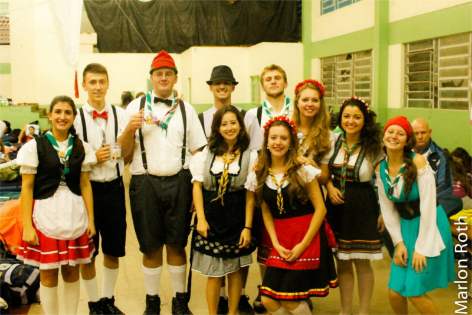
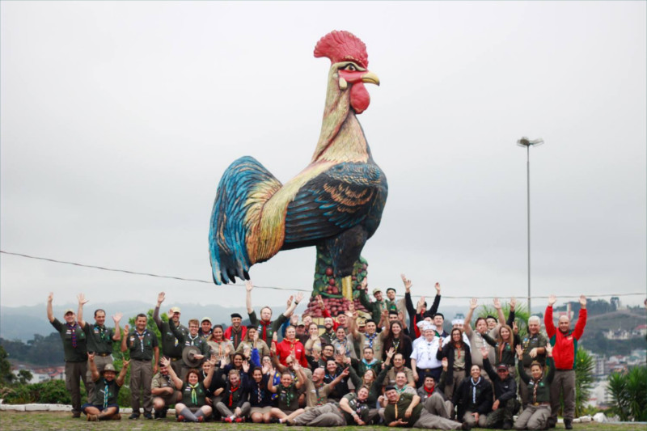
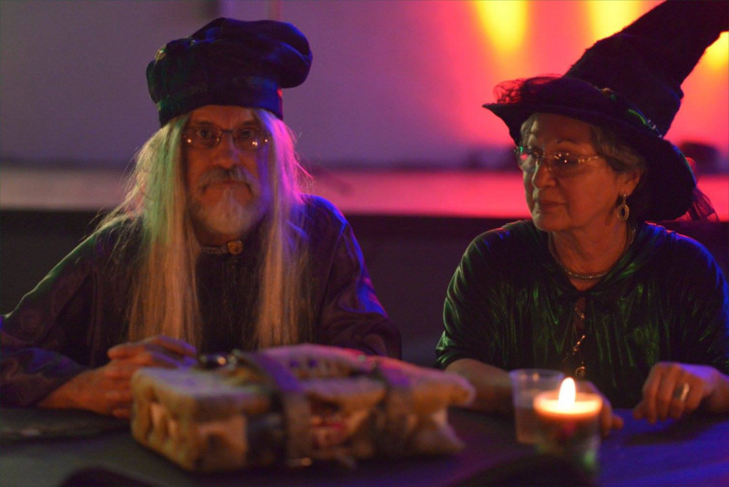
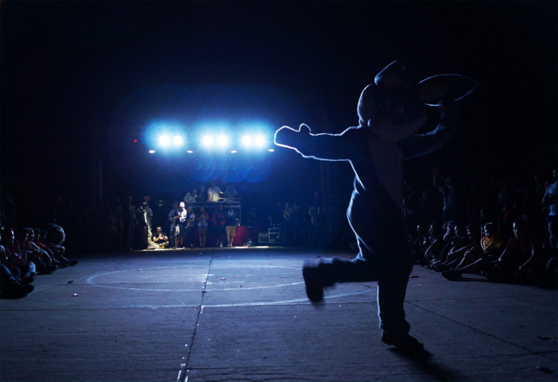

#aForçaDespertou
Iniciar
A Força foi forte este ano, acompanhe a retrospectiva de 2015 dos Escoteiros do Brasil - Rio Grande do Sul.
Congresso e Assembleia Regional Escoteira
Fórum Regional de Jovens Líderes
Santa Maria
28/01 e 02/02
400 participantes

INDABA regional da Modalidade do Ar
Santa Maria
28/02
22 participantes
Campanha #sejaescoteiro
Rio Grande do Sul
21/3 a 11/4
Aerocampo Sul
Santo Ângelo
01/5 e 02/5
88 participantes
ALEMUT - XXXVII Mutirão Regional Pioneiro
Estância Velha
16/5 e 17/5
344 participantes

Vigília Regional Pioneira
Rio Grande do Sul
27/6

XXXIX Fórum Regional Pioneiro e VII Fórum Regional de Mestres
Tapejara
04/7 e 05/7
175 participantes
ERESCOT - Encontro Regional de Escotistas do Ramo Escoteiro
Porto Alegre
11/7 e 12/7
19 participantes
Encontro Regional de Jovens Líderes
Caxias do Sul
29/8 e 30/8
45 participantes
ERCHES - Encontro Regional de Escotistas do Ramo Sênior
Flores da Cunha
26/9 e 27/9
73 participantes

XXIII OLIMPIO - Olimpíadas Pioneiras
Canoas
26/9 e 27/9
210 participantes
III AGAARS
Lajeado
31/10, 01/11 e 02/11
1.303 participantes

MUTFOOD - XXXVIII Mutirão Regional Pioneiro
Santa Cruz
21/11 e 22/11
452 participantes

Seminário Regional de Formação
Campo Escola Escoteiro - Viamão
28/11 e 29/11
80 participantes